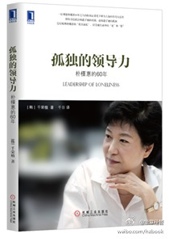

//@lvxinke: 收了！@加文的力偶 @Ada李力//@华章经管:这本《孤独的领导力：朴槿惠的60年》把触角伸到过去，描绘出了朴槿惠的真实面孔。相比其他的各种记录，作者在本书中对朴槿惠的描述更加丰满，也更加让人信赖。可谓“她力量”的最佳诠释！@华章经管:#华章新书# 《孤独的领导力：朴槿惠的60年》—— 一位观察朴槿惠10年之久的权威记者笔下鲜为人知的传奇女总统，排除亲信政治缔造了她的成就，也缔造了她的孤独。层层展现朴槿惠的“真实面孔”，她生命中的“光”和“影”，以及她将打造的不一样的韩国。网页链接 